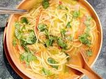
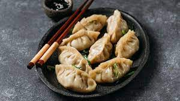

Arunachal Pradesh's platter varies across the regions and the tribal groups. The styles, methods of cooking, the ingredients used and elements of these tribal preparations are countless and hence offers one with a very diverse, vibrant and dynamic menu.
The staple food, like in most North-Eastern places, is rice, fish, meat and vegetables. The dishes use very less spice, and they mostly use flavours from herbs, organic productions and bamboo shoots. Different styles and verities of Momos and Thukpa are popular and widespread in the area. Boiled rice cakes are also enjoyed widely as a snack all over Arunachal Pradesh. Pasa, a fish soup, while Noatak a fish curry are delicacies, almost essentials in a local platter. Chinese cuisine is also trendy and finds its distinct place in Arunachal Pradesh's kitchen. Other than these is a rice beer called Apang found in the region.
Arunachal Pradesh Each tribe in Arunachal Pradesh has a different style of clothing. The basic style of dress is chemise, which is a sleeveless shirt with a full-sleeved jacket, which is embroidered. They wear a skirt, which looks like a wrapped-around loin cloth. Skull cap made with Yak hair is a famous accessory among men.